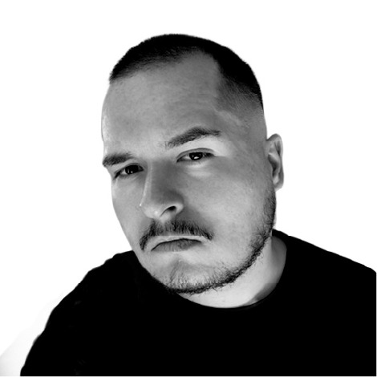

I’m Nicolas, an early-career graphic designer focused on clear visual communication and strong foundational design principles.
I specialize in layout, visual hierarchy, and detail, aiming to create work that feels intentional, balanced, and well-considered. My background includes self-directed learning and hands-on practice, with a constant focus on improving quality and consistency.
I’ve also worked in a professional web development environment, which gave me exposure to structured workflows and technical collaboration, while my long-term focus remains firmly on graphic design.
I’m currently looking for a full-time graphic design role in Bulgaria or a remote EU-based team where I can continue growing as a designer.